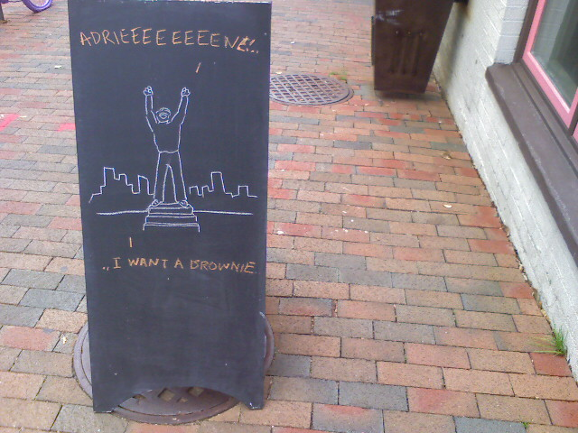
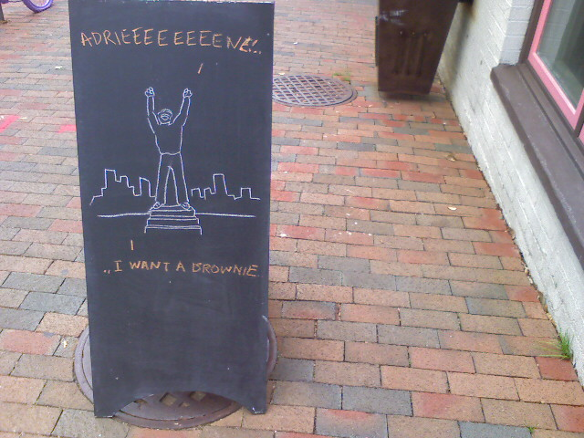
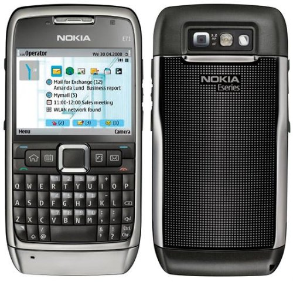
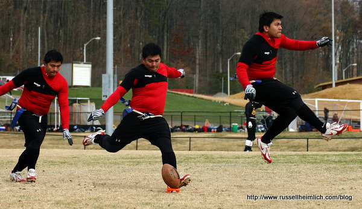
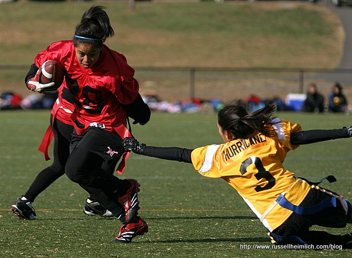
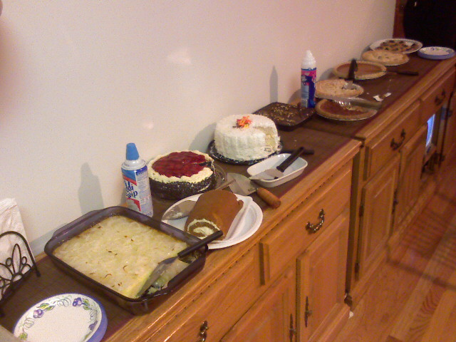

Rocky Wants A Brownie

The high end cupcake shop, Baked & Wired, that I pass everyday on my way to work has these funny chalk drawings outside of their store. I found this one blog-worthy.


The high end cupcake shop, Baked & Wired, that I pass everyday on my way to work has these funny chalk drawings outside of their store. I found this one blog-worthy.
T-Mobile has had their 3G service up and running for over a month here in DC. My 2 year contract that I got with my T-Mobile Dash expired on Halloween of this year. So technically you could say I’m in the market for a new cell phone. The problem is there aren’t any phones that I’m particularly excited about. I would like a 3G QWERTY keyboard phone that I can surf the web and take pictures with. It sounds simple, but there are surprisingly few options.
expired on Halloween of this year. So technically you could say I’m in the market for a new cell phone. The problem is there aren’t any phones that I’m particularly excited about. I would like a 3G QWERTY keyboard phone that I can surf the web and take pictures with. It sounds simple, but there are surprisingly few options.
There are only two official phones from T-Mobile that meet those needs: the Samsung Behold and the T-Mobile G1. The Behold lacks Wifi and the supposed real web browsing is mediocre. The G1 is the new Android-powered phone that everyone made such a hoopla about a month ago. A friend of mine has a G1 and says the battery life is abysmal. After playing with it for a couple of minutes I felt impressed but not knock-me-down I must have this NOW. If I did get a G1, I would certainly get it from Walmart where it sells for $50 less than T-Mobile.
and the T-Mobile G1. The Behold lacks Wifi and the supposed real web browsing is mediocre. The G1 is the new Android-powered phone that everyone made such a hoopla about a month ago. A friend of mine has a G1 and says the battery life is abysmal. After playing with it for a couple of minutes I felt impressed but not knock-me-down I must have this NOW. If I did get a G1, I would certainly get it from Walmart where it sells for $50 less than T-Mobile.

Other options include an unlocked Nokia phone. The E71 looks like a great contender though it is more expensive and doesn’t support T-Mobile’s 3G spectrum. Drats!
looks like a great contender though it is more expensive and doesn’t support T-Mobile’s 3G spectrum. Drats!

Looks like I’ll just keep on waiting for something more interesting to come along. I mean is a 3G QWERTY phone with decent battery life too much to ask for?
In June I wrote about a great little mashup from iSnoop.net that takes a tracking number and plots the points on a Google map. It’s a great way to see where your precious cargo is during transit. My favorite part is you can grab an RSS feed so you can track the shipment from your feed reader.

Apparently the tool has been so successful that it got spun-off as Boxoh.com. The site got a clean visual refresh making it easier to see where your package is at and the RSS feed for a tracking number is still there. Perfect for keeping on top of all those Cyber Monday orders!
On the Saturday before Thanksgiving the Filipino Cultural Association of College Park takes part in a flag-football tournament with other schools in the area. For the past three years I have been taking pictures at the game while Kristina played. Since Kristina is no longer a student she was there for moral support but I still took pictures. Here are some of the standout photos.
Carlos Castillo Kickoff Sequence
Cynthia Gamboa shakes off defender JoAn Burce.
Marie Pasion and Sandy Abad take down the quarterback.
The girls team fared well but ended up losing to rival George Mason in the last game. The boys ended up winning it all but it was so windy and cold Kristina and I decided to take off early. Besides when the sun goes down it’s pretty much useless to take sports photos.
Kristina got out the Christmas decorations including this ridiculous antler headband.


We had Thanksgiving dinner at Kristina’s parents house along with my parents. Kristina’s mom cooked up a marvelous meal. Dishes included two turkeys, one roasted another smoked, spare ribs, pot roast, salmon cakes, two kinds of stuffing, two kinds of rice and green bean cassarole. Too follow all that food we had another table of desserts. A good time was had by all.
There were lots of reporters outside of George Washington University Hospital this morning. This must be where U.S. Attorney General Michael Mukasey must be being treated after his fainting spell during a speech last night.
Around this time last year I had no idea what to ask for for the holidays. Since then I have been keeping a wish list on boxedup.com. Whenever I came across an item that tickled my fancy I added it to my list. The great thing about Boxed Up is you can tag the items, comment on them, and get an RSS feed of your wish list. The site supports importing your Amazon wish list to get started. After you get something, you can save it to your ‘Things I Have‘ list for others to see what your interests might be. Finally, what web 2.0 site wouldn’t be complete without some sort of social networking aspect? Boxed Up lets you add your friends or you can browse through the recently added/ popular product list on the front page. All in all, BoxedUp.com has been a great resource for organizing my desired gifts.
Speaking of gifts, my list consists mostly of funny t-shirts from Threadless.com but if crafts are more of your thing, feel free to make me an epic shoebox diorama. A diorama? I remember having to make one for a class project in elementary school and haven’t dealt with one since. So my challenge to all my friends and family is to make a diorama of a scene that you think I would like. Use your imagination and if you need some inspiration just think robots, lightbulbs, umbrellas, or computers.
Have you made up your wish list yet?
I was dumbfounded at the number of people waiting in line to enter the Foggy Bottom Metro Station in Georgetown this evening. Only one of three escalators was open causing the people who wanted to come up to share with the people trying to walk down. The line went around the block from both sides as you’ll see in this video taken by my fellow co-worker, Paulo.
This isn’t the first time escalators have plagued Foggy Bottom. I skipped the ridiculous lines and instead walked to Farragut North a mere 8 blocks away.
This weekend my roommates ventured to a Linens-N-Things store for a going out of business sale. They ended up bringing home a Kitty Litter Hideaway cabinet . Why did they buy it? Who knows. Puck sure hasn’t taken to it unless there is a treat inside.
. Why did they buy it? Who knows. Puck sure hasn’t taken to it unless there is a treat inside.

As they were putting the unit together they realized they made a mistake. The trouble with these cheap furniture pieces is they aren’t made for mistakes. By unscrewing the pieces from each other, the pre-drilled hole no longer gripped the screw. Luckily I learned this little screw-tightening trick from my dad. Take a match and break it off so it is even with the screw hole. When you screw the screw back in the wood the match tightens everything up. Great for these self-assembly furniture items.